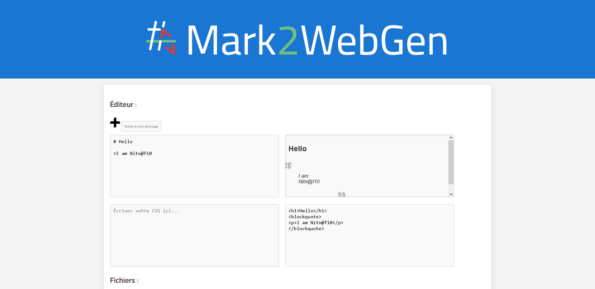
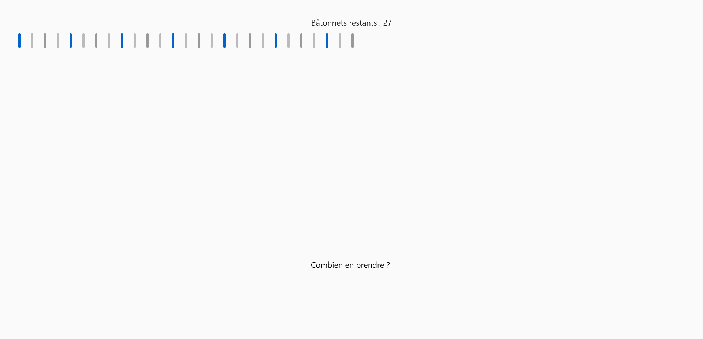

Hi there, I'm Nitn@f10, an amateur web designer and a Python developer.
Projects
I 'm working on different projects, here's a sample :
Mark2WebGen
Mark2WebGen is a simple tool for converting Markdown to HTML with custom CSS styles. Write your text, add CSS, visualize the rendering and export all in one click. Have fun creating and styling your web content with ease!
Nim Game
A simple strategy game with sticks made famous by the Fort Boyard emission.
Command converter

Small converter from Windows .bat files to Linux .sh files.